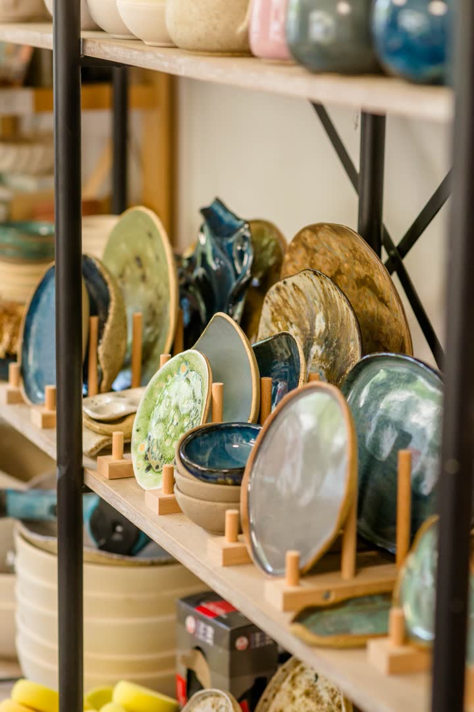
כרטיסייה ל-4 מפגשים
ארבעה מפגשים עם ליווי אישי: אובניים, פיסול, חוליות, פינצ'ינג ומשטחים, וגם צביעה ועבודה עם זיגוגים.
לפרטים ומחיר בוואטסאפסטודיו חרס · סיוון נווה · מיתר
סטודיו ביתי של האמנית סיוון נווה במיתר, ליד באר שבע. סדנאות פיסול ואובניים בליווי אישי, בלי ניסיון קודם.
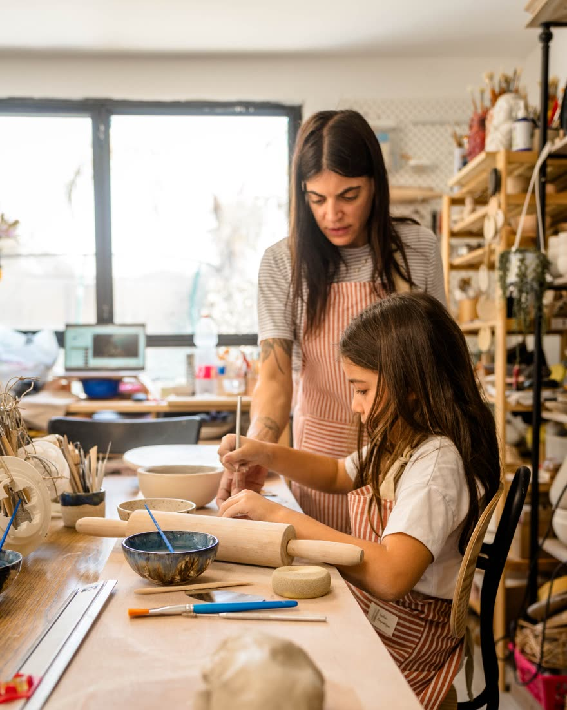
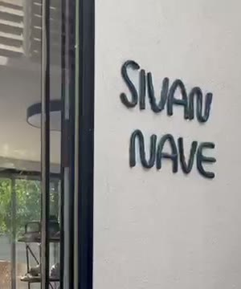
נעים להכיר
כשהידיים נוגעות באדמה, הראש משתחרר, הזמן מאט, ומשהו חדש מקבל צורה.
אני אמנית וקדרית, והבעלים של סטודיו חרס במיתר: סטודיו ביתי עם אווירה כפרית, הרבה טבע, רוגע וחיבור לאדמה. הטבע, הצמחים ובעלי החיים שמסביבי נכנסים לכל מה שאני יוצרת: קערות וספלים מהאובניים, כדים ועציצים, צלחות בצורת פרחים, חמסות ופסלונים.
בסטודיו אני מלמדת פיסול, עבודה על האובניים, בנייה בחוליות, פינצ'ינג ועבודה במשטחים, מדמויות מפוסלות ועד כלים לשימוש יומיומי. זה מקום להתנתק מהשגרה, להתחבר לעצמכם ולגלות את היצירתיות שלכם, בקצב של כל אחד ואחת.
סטודיו חרס. המקום שבו האמנות פוגשת את הנשמה.
בלי ניסיון קודם · ילדים, נוער ומבוגרים · אווירה משפחתית וליווי אישי צמוד
מחכה לראות אתכם בסטודיו,סיוון נווה
סדנאות

ארבעה מפגשים עם ליווי אישי: אובניים, פיסול, חוליות, פינצ'ינג ומשטחים, וגם צביעה ועבודה עם זיגוגים.
לפרטים ומחיר בוואטסאפ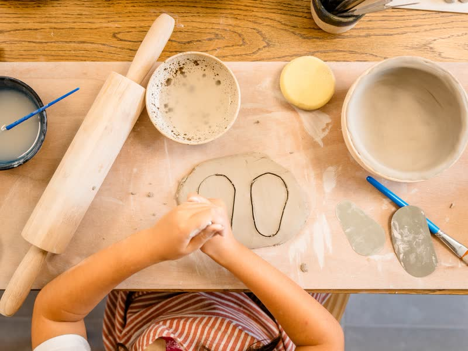
היכרות נעימה ורגועה עם עולם החומר. מפסלים, מנסים את האובניים ועובדים במשטחים, צובעים באותו מפגש ויוצרים את הכלי הראשון שלכם.
לפרטים ומחיר בוואטסאפ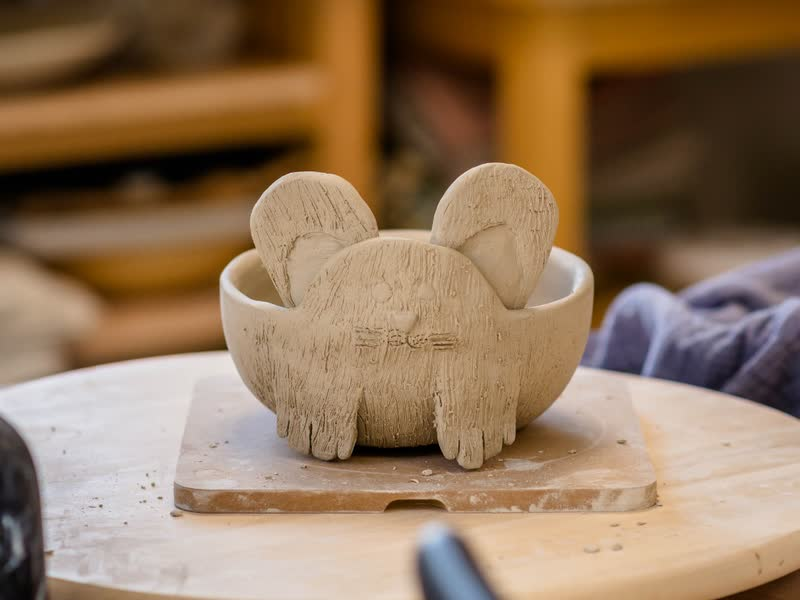
רק אתם ואני.
לומדים את יסודות העבודה על האובניים: מרכוז החומר, יצירת צילינדר, פתיחה והרמה. כל משתתף יוצר כשלושה כלים. מתאימה לזוגות, וגם למי שמגיע לבד.
לתיאום בוואטסאפ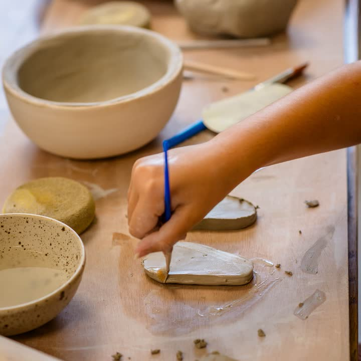
ימי הולדת, מסיבות רווקות, ערבי צוות וקבוצות חברים. כל משתתף יוצר פריט אישי משלו, שמחכה לו לאיסוף אחרי השריפה.
לתיאום אירוע בוואטסאפהמחיר תלוי בסוג הסדנה, ובקבוצות גם במספר המשתתפים. כתבו לי, ואשלח מחיר מדויק.
איך זה עובד
מספרים מה מעניין אתכם, וקובעים יחד מועד שנוח לכם.
בלי ניסיון ובלי ציוד. חימר, כלים וסינרים מוכנים בשבילכם.
בוחרים צבעים וזיגוגים באותו מפגש, ואני מלווה אתכם בקצב שלכם.
הכלים נשרפים בתנור, ואחרי שבועיים-שלושה מגיעה ממני הודעה שהם מחכים לכם.
הצצה לסטודיו
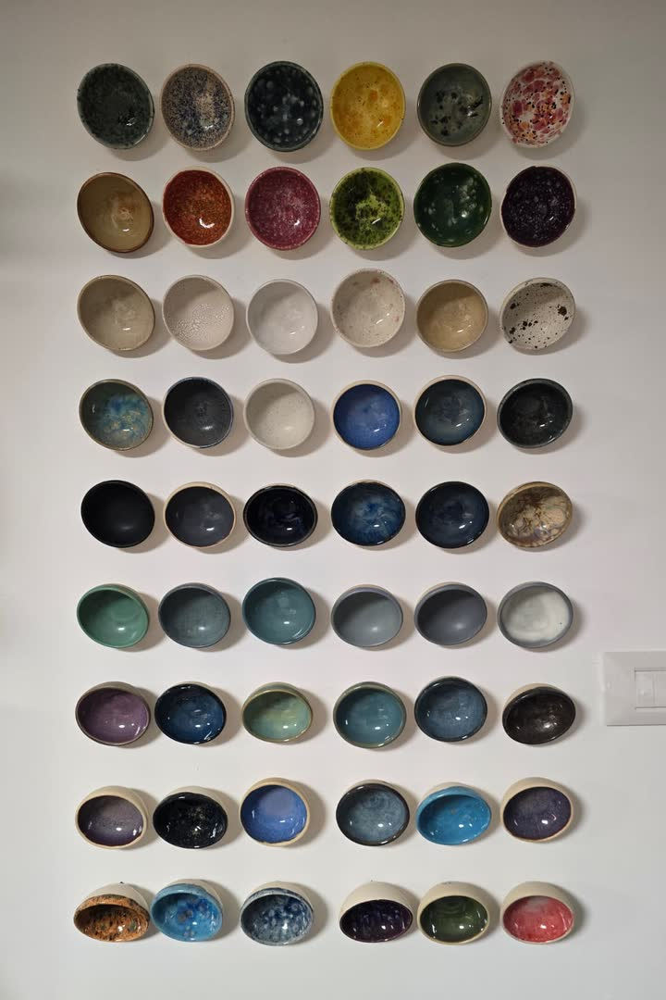
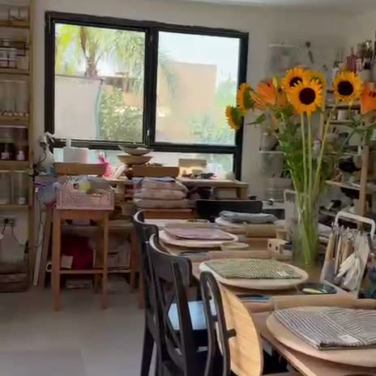
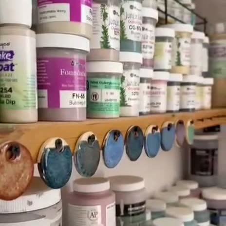
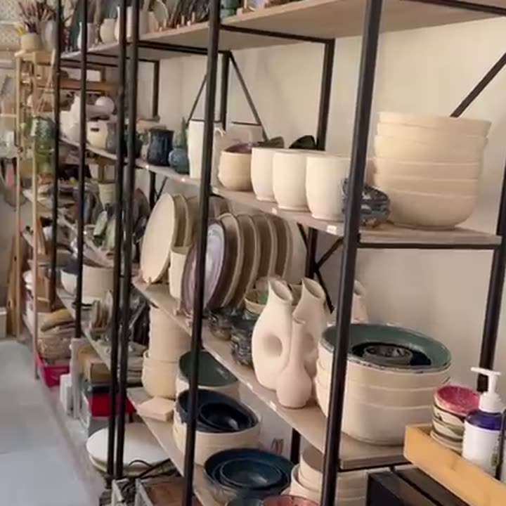
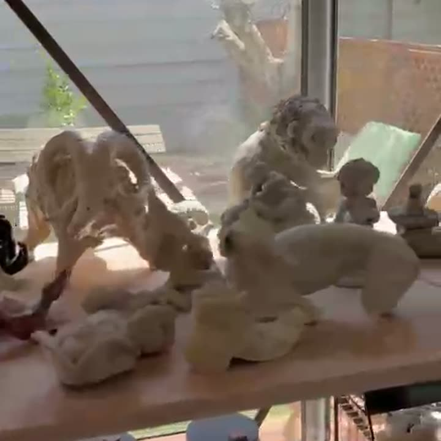
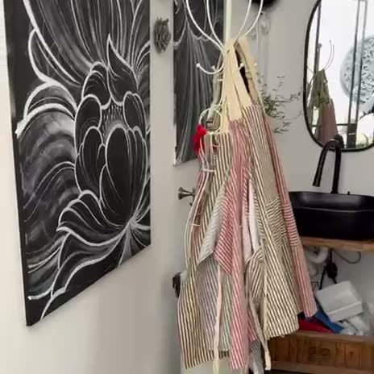
מי שהיו כאן
נהנינו מאוד מהסדנה, ובמיוחד מהאווירה הנעימה ומהסבלנות שלך. זכינו באישה כל כך נחמדה, סבלנית ועם לב זהב. הסטודיו שלך מספר כל כך הרבה סיפורים…
עשית לנו את היום עם האירוח המושלם והידע שיש לך. שמחנו כל כך להכיר אותך, הבטחתי לאשתי שנחזור שוב…
לפני שמגיעים
זה תלוי בסוג הפעילות. בסדנאות לקבוצות ובאירועים המחיר תלוי גם במספר המשתתפים. כתבו לי בוואטסאפ מה מעניין אתכם, ואשלח מחיר מדויק.
לכולם: ילדים, נוער ומבוגרים. אפשר להגיע לבד, בזוג, עם הילדים או עם חברים.
ממש לא. הסדנה למתחילים בנויה בדיוק בשביל מי שנוגע בחומר בפעם הראשונה.
מפגש בכרטיסייה נמשך שעתיים וחצי, וסדנת האובניים לשניים נמשכת שלוש שעות. בסדנאות ובאירועים לקבוצות אני מתאימה את האורך לקבוצה.
בטח. יש סדנת אובניים פרטית לשניים, ויש ימי הולדת, מסיבות רווקות, ערבי צוות וקבוצות חברים. כתבו לי מה סוג האירוע, התאריך, כמה משתתפים ובאילו גילאים, ונתאים יחד את הפעילות.
בגדים נוחים שלא אכפת לכם שיתלכלכו קצת. סינרים יש בסטודיו.
הכלים נשארים בסטודיו להתייבש, להישרף בתנור ולהתזגג. בדרך כלל הם מוכנים לאיסוף אחרי שבועיים-שלושה, ואני מעדכנת כשהם מחכים לכם.
בואו ניצור יחד
הכי מהיר בוואטסאפ. ספרו לי מה מעניין אתכם, כמה תהיו ומתי נוח לכם, ואחזור עם מועד ומחיר מדויק.
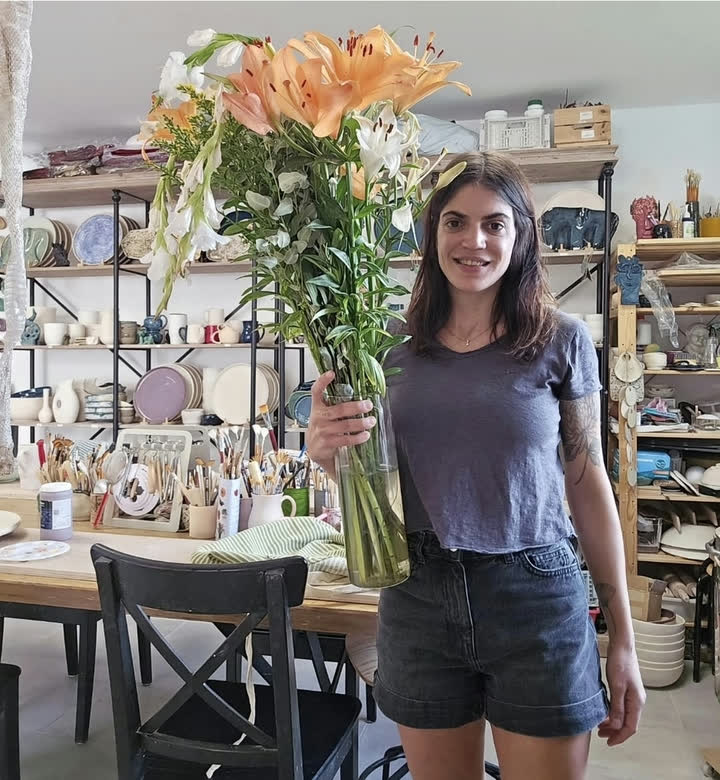